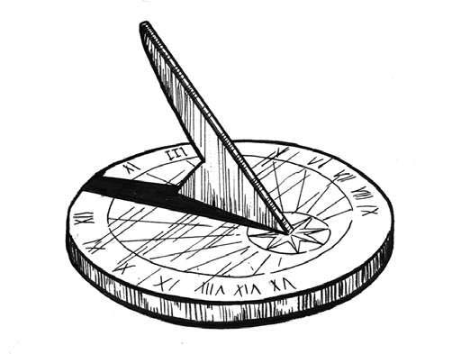

如前所述，太阳是最实用的自然计时器。除去日出和日落，正午是最容易辨识的时间点，因为太阳在此时位置最高，投射在地面上的影子最短，因此成为一天中最受欢迎的计时时刻。目前，我们还不清楚人类是从何时开始利用太阳来计时的。人类有可能在数千年以前就开始使用某些基本标记来计时，但我们不清楚具体始于何时。并且我们也不清楚人类最早到底是利用阴影还是利用阳光来判断时间的，但已发现的早期日晷表明，利用阴影可能更普遍（清晨影子最长、接近正午会渐渐变短，接近黄昏时又再度变长）。已知的最早日晷大概出现在公元前1500年，见于古埃及和巴比伦天文学中。
从原理上讲，日晷是一个带有指针的水平或垂直的平面，这个指针可以是一根细杆，也可以是一个竖直且锋利的面，它能够将太阳投影到一个带有时间刻度的表面上。为了给出精准读数，日晷的晷面必须与赤道面平行，指针必须指向真正的北天极方向。在北半球，北极星所在的方向就是北天极方向。

日晷，由一个水平晷面和一根晷针组成
日晷上12进制的标记用来测量每个小时。这种对时间的测量方式，也可以用到其他时间测量工具上，例如水钟、蜡烛时钟、沙漏，便于在阴天或晚上判断时间。 [shu籍 分.享 V信jnztxy]